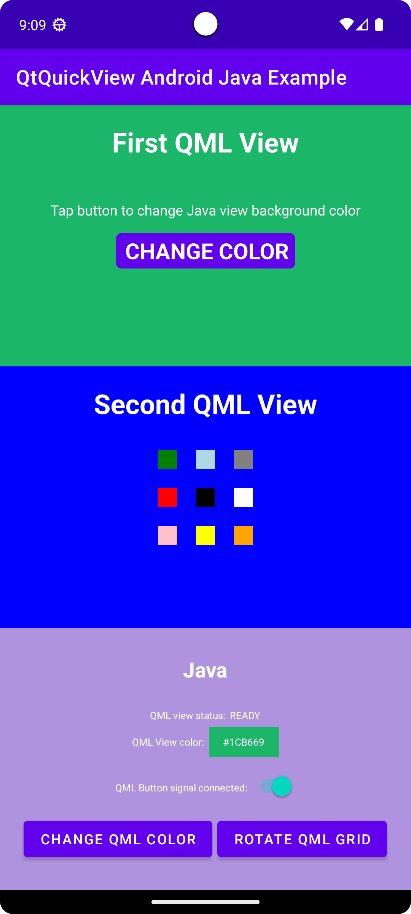

Qt Quick for Android Studio Projects
Overview
This example contains a QML project that you can import into Android Studio with the Qt Tools for Android Studio plugin and Java and Kotlin projects that use the QML project as a View by utilizing the QtQuickView API.
For more information on how QML works, see the Qt Qml. This documentation will focus on how a QML component is embedded into Java- and Kotlin-based Android applications.

First, we look at the MainActivity's onCreate() method of the Java and Kotlin projects.
For a Java-based project:
@Override
protected void onCreate(Bundle savedInstanceState) {
super.onCreate(savedInstanceState);
setContentView(R.layout.activity_main);
m_qmlViewBackgroundText = findViewById(R.id.qmlViewBackgroundText);
m_qmlStatus = findViewById(R.id.qmlStatusText);
m_androidControlsLayout = findViewById(R.id.javaRelative);
m_colorBox = findViewById(R.id.qmlColorBox);
m_switch = findViewById(R.id.disconnectQmlListenerSwitch);
m_switch.setOnClickListener(view -> switchListener());
QtQuickView m_firstQuickView = new QtQuickView(this);
QtQuickView m_secondQuickView = new QtQuickView(this);
// Set status change listener for m_qmlView
// listener implemented below in OnStatusChanged
m_firstQmlContent.setStatusChangeListener(this);
m_secondQmlContent.setStatusChangeListener(this);
final ViewGroup.LayoutParams params = new FrameLayout.LayoutParams(
ViewGroup.LayoutParams.MATCH_PARENT, ViewGroup.LayoutParams.MATCH_PARENT);
FrameLayout m_firstQmlFrameLayout = findViewById(R.id.firstQmlFrame);
m_firstQmlFrameLayout.addView(m_firstQuickView, params);
FrameLayout m_secondQmlFrameLayout = findViewById(R.id.secondQmlFrame);
m_secondQmlFrameLayout.addView(m_secondQuickView, params);
m_firstQuickView.loadContent(m_firstQmlContent);
m_secondQuickView.loadContent(m_secondQmlContent);
Button m_changeColorButton = findViewById(R.id.changeQmlColorButton);
m_changeColorButton.setOnClickListener(view -> onClickListener());
Button m_rotateQmlGridButton = findViewById(R.id.rotateQmlGridButton);
m_rotateQmlGridButton.setOnClickListener(view -> rotateQmlGrid());
}
For a Kotlin-based project:
override fun onCreate(savedInstanceState: Bundle?) {
super.onCreate(savedInstanceState)
m_binding = ActivityMainBinding.inflate(layoutInflater)
val view = m_binding.root
setContentView(view)
m_binding.disconnectQmlListenerSwitch.setOnCheckedChangeListener { button, checked ->
switchListener(
button,
checked
)
}
val firstQtQuickView = QtQuickView(this)
val secondQtQuickView = QtQuickView(this)
// Set status change listener for m_qmlView
// listener implemented below in OnStatusChanged
m_firstQmlContent.setStatusChangeListener(this)
m_secondQmlContent.setStatusChangeListener(this)
val params: ViewGroup.LayoutParams = FrameLayout.LayoutParams(
ViewGroup.LayoutParams.MATCH_PARENT, ViewGroup.LayoutParams.MATCH_PARENT
)
m_binding.firstQmlFrame.addView(firstQtQuickView, params)
m_binding.secondQmlFrame.addView(secondQtQuickView, params)
firstQtQuickView.loadContent(m_firstQmlContent)
secondQtQuickView.loadContent(m_secondQmlContent)
m_binding.changeQmlColorButton.setOnClickListener { onClickListener() }
m_binding.rotateQmlGridButton.setOnClickListener { rotateQmlGrid() }
}
Note: in the Kotlin project we use View binding to access the UI components of the application:
m_binding = ActivityMainBinding.inflate(layoutInflater) val view = m_binding.root setContentView(view)
Inside the onCreate() method, previously declared variables are initialized with new QtQuickViews. These new instances of QtQuickView are created by giving them the Context of the Java/Kotlin Activity as arguments.
For a Java-based project:
QtQuickView m_firstQuickView = new QtQuickView(this); QtQuickView m_secondQuickView = new QtQuickView(this);
For a Kotlin-based project:
val firstQtQuickView = QtQuickView(this) val secondQtQuickView = QtQuickView(this)
The QtQuickViews are added to the Android layout with appropriate layout parameters.
For a Java-based project:
final ViewGroup.LayoutParams params = new FrameLayout.LayoutParams(
ViewGroup.LayoutParams.MATCH_PARENT, ViewGroup.LayoutParams.MATCH_PARENT);
FrameLayout m_firstQmlFrameLayout = findViewById(R.id.firstQmlFrame);
m_firstQmlFrameLayout.addView(m_firstQuickView, params);
FrameLayout m_secondQmlFrameLayout = findViewById(R.id.secondQmlFrame);
m_secondQmlFrameLayout.addView(m_secondQuickView, params);
For a Kotlin-based project:
val params: ViewGroup.LayoutParams = FrameLayout.LayoutParams(
ViewGroup.LayoutParams.MATCH_PARENT, ViewGroup.LayoutParams.MATCH_PARENT
)
m_binding.firstQmlFrame.addView(firstQtQuickView, params)
m_binding.secondQmlFrame.addView(secondQtQuickView, params)
The Main and Second Java classes inherit from the QtQuickViewContent class. These classes are generated from the QML project that we've imported.
For a Java-based project:
private final Main m_firstQmlContent = new Main(); private final Second m_secondQmlContent = new Second();
For a Kotlin-based project:
private val m_firstQmlContent: Main = Main() private val m_secondQmlContent: Second = Second()
The Qt Quick content is loaded through the QtQuickView.loadContent() method, which takes a QtQuickViewContent as an argument.
For a Java-based project:
m_firstQuickView.loadContent(m_firstQmlContent); m_secondQuickView.loadContent(m_secondQmlContent);
For a Kotlin-based project:
firstQtQuickView.loadContent(m_firstQmlContent) secondQtQuickView.loadContent(m_secondQmlContent)
Interacting with the QML components
To interact with the embedded QML components we implement the QtQmlStatusChangeListener interface and override the onStatusChanged method to get the loading status of the QtQuickViewContent currently being loaded into the QtQuickViews.
For a Java-based project:
public class MainActivity extends AppCompatActivity implements QtQmlStatusChangeListener { ... }
For a Kotlin-based project:
class MainActivity : AppCompatActivity(), QtQmlStatusChangeListener { ... }
The onStatusChanged implementation:
For a Java-based project:
@Override
public void onStatusChanged(QtQmlStatus qtQmlStatus, QtQuickViewContent content) {
Log.i(TAG, "Status of QtQuickView: " + qtQmlStatus);
// Show current QML View status in a textview
m_qmlStatus.setText(getString(R.string.qml_view_status, m_statusNames.get(qtQmlStatus)));
updateColorDisplay();
if (content == m_firstQmlContent) {
// Connect signal listener to "onClicked" signal from main.qml
// addSignalListener returns int which can be used later to identify the listener
if (qtQmlStatus == QtQmlStatus.READY && m_switch.isChecked()) {
m_qmlButtonSignalListenerId = m_firstQmlContent.connectOnClickedListener(
(String name, Void v) -> {
Log.i(TAG, "QML button clicked");
m_androidControlsLayout.setBackgroundColor(Color.parseColor(
m_colors.getColor()
));
});
}
}
}
For a Kotlin-based project:
override fun onStatusChanged(status: QtQmlStatus?, content: QtQuickViewContent?) {
Log.v(TAG, "Status of QtQuickView: $status")
// Show current QML View status in a textview
m_binding.qmlStatusText.text = getString(R.string.qml_view_status, m_statusNames[status])
updateColorDisplay()
if (content == m_firstQmlContent) {
// Connect signal listener to "onClicked" signal from main.qml
// addSignalListener returns int which can be used later to identify the listener
if (status == QtQmlStatus.READY && m_binding.disconnectQmlListenerSwitch.isChecked) {
m_qmlButtonSignalListenerId =
m_firstQmlContent.connectOnClickedListener { _: String, _: Void? ->
Log.i(TAG, "QML button clicked")
m_binding.kotlinRelative.setBackgroundColor(
Color.parseColor(
m_colors.getColor()
)
)
}
}
}
}
The MainActivity is set as the statusChangeListener of the m_mainQmlContent and m_secondQmlContent with the QtQuickViewContent.setStatusChangeListener method.
For a Java-based project:
m_firstQmlContent.setStatusChangeListener(this); m_secondQmlContent.setStatusChangeListener(this);
For a Kotlin-based project:
m_firstQmlContent.setStatusChangeListener(this) m_secondQmlContent.setStatusChangeListener(this)
The overridden callback function onStatusChanged() receives StatusChanged() signal containing the current status (public Enum QtQmlStatus) of the loading of the current QtQuickViewContent into the QtQuickView. If this QtQmlStatus is confirmed to be QtQmlStatus.READY, we can start interacting with the QML view.
Getting and setting QML component property values
Getting and setting QML component property values happens through the methods described in the Main.java class. In this case we use the m_mainQmlContent.setColorStringProperty() and m_mainQmlContent.getColorStringProperty() methods. These methods are generated according to what properties the QML component includes.
For a Java-based project:
public void onClickListener() {
// Set the QML view root object property "colorStringFormat" value to
// color from Colors.getColor()
m_firstQmlContent.setColorStringFormat(m_colors.getColor());
updateColorDisplay();
}
private void updateColorDisplay() {
String qmlBackgroundColor = m_firstQmlContent.getColorStringFormat();
// Display the QML View background color code
m_qmlViewBackgroundText.setText(qmlBackgroundColor);
// Display the QML View background color in a view
// if qmlBackGroundColor is not null
if (qmlBackgroundColor != null) {
m_colorBox.setBackgroundColor(Color.parseColor(qmlBackgroundColor));
}
}
For a Kotlin-based project:
private fun onClickListener() {
// Set the QML view root object property "colorStringFormat" value to
// color from Colors.getColor()
m_firstQmlContent.colorStringFormat = m_colors.getColor()
updateColorDisplay()
}
private fun updateColorDisplay() {
val qmlBackgroundColor = m_firstQmlContent.colorStringFormat
// Display the QML View background color code
m_binding.qmlViewBackgroundText.text = qmlBackgroundColor
// Display the QML View background color in a view
// if qmlBackgroundColor is not null
if (qmlBackgroundColor != null) {
m_binding.qmlColorBox.setBackgroundColor(Color.parseColor(qmlBackgroundColor))
}
}
With the m_mainQmlContent.setColorStringProperty() method we set the colorStringFormat property value of the m_mainQmlContent a random color value that is fetched from the Colors.java (or Colors.kt) class.
The m_mainQmlContent.getColorStringProperty() method is used here to fetch the current background color of the root object of the m_mainQmlContent and then show it to the user on the Java/Kotlin Android side of the application.
m_secondQmlContent has a Grid QML component which we can rotate from the Java side with the generated m_secondQmlContent.setGridRotation() method.
For a Java-based project:
private void rotateQmlGrid() {
Integer previousGridRotation = m_secondQmlContent.getGridRotation();
if (previousGridRotation != null) {
m_secondQmlContent.setGridRotation(previousGridRotation + 45);
}
}
For a Kotlin-based project:
private fun rotateQmlGrid() {
val previousGridRotation = m_secondQmlContent.gridRotation
if (previousGridRotation != null) {
m_secondQmlContent.gridRotation = previousGridRotation + 45
}
}
Signal listeners
The QtQuickViewContent class offers a connectSignalListener() and disconnectSignalListener() methods which are used to connect and disconnect signal listener between signals that are declared in the QML component root object. The QtQuickViewContent.connectSignalListener() returns a unique signal listener id which we store and use later to identify and disconnect the listener.
Here we connect a signal listener to the onClicked() signal of the QML component.
For a Java-based project:
if (qtQmlStatus == QtQmlStatus.READY && m_switch.isChecked()) {
m_qmlButtonSignalListenerId = m_firstQmlContent.connectOnClickedListener(
(String name, Void v) -> {
Log.i(TAG, "QML button clicked");
m_androidControlsLayout.setBackgroundColor(Color.parseColor(
m_colors.getColor()
));
});
}
For a Kotlin-based project:
if (status == QtQmlStatus.READY && m_binding.disconnectQmlListenerSwitch.isChecked) {
m_qmlButtonSignalListenerId =
m_firstQmlContent.connectOnClickedListener { _: String, _: Void? ->
Log.i(TAG, "QML button clicked")
m_binding.kotlinRelative.setBackgroundColor(
Color.parseColor(
m_colors.getColor()
)
)
}
}
The onClicked() signal is emitted every time the button on the QML component is clicked. That signal is then received by this listener and the background color of the layout holding the Android side of the application is set to a random color value fetched from the Colors.java class.
Next, the signal listener is disconnected using the QtQuickViewContent.disconnectSignalListener() method by giving it the unique signal listener id.
For a Java-based project:
m_firstQmlContent.disconnectSignalListener(m_qmlButtonSignalListenerId);
For a Kotlin-based project:
m_firstQmlContent.disconnectSignalListener(m_qmlButtonSignalListenerId)